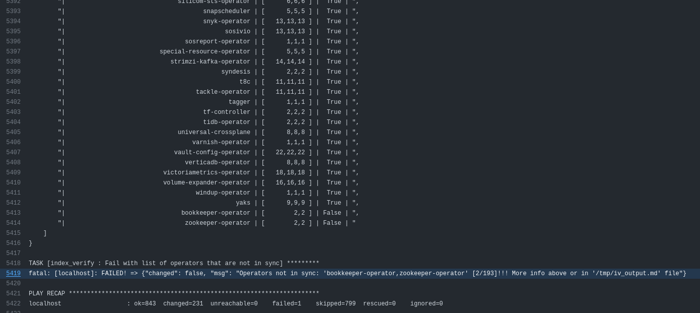
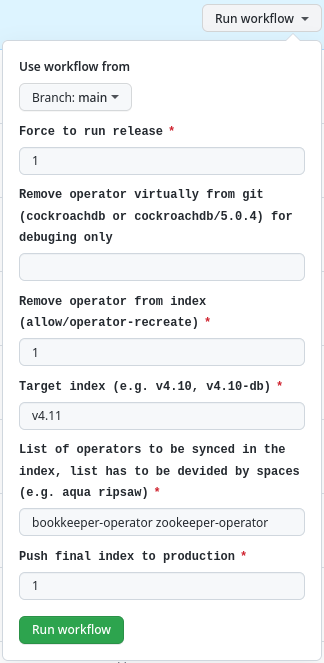

Maintainer
Testing pipeline maintainer documentation
This documentation is focused on Kubernetes (k8s) operators. A maintainer is responsible for PR review on the following link
Overview
The first part is related to the testing pipeline and how to get a PR green and merged. For failed operator release handling, please jump to Release pipeline maintainer documentation.
When a pull request (PR) is opened, tests are automatically triggered to ensure that it meets all quality standards. Tests produce labels. If the PR passes these tests, it is automatically merged, and the new operator is published to a specific index.
Do use the merge button. It can cause a failed release. Always make PR green and it will be merged automatically. To restart a test use /retest comment or as a last resort close and reopen a PR.
For an automatic merge to be executed non of *-failed labels, the following three labels must be present:
graph LR
id7([package-validated]) --> id1(automatc merge is triggered)
id10([installation-validated]) --> id1(automatc merge is triggered)
id11([authorized-changes]) --> id1(automatc merge is triggered)When a PR is opened, the original title is automatically replaced with a standardized one containing operator versions that were changed. There is also a flag in square braces indicating things like the single version will be overwritten including bundle delete and create and so on. More info is in the release pipeline section](#pr-flags). Don't worry about deleted bundles, there is still a copy available, so existing indexes will work as designed.
We will go over situations when some label is missing or something went wrong in the following paragraphs.
The package-validated label is missing
graph LR
id10(Operator test / lemon / Deploy from scratch) --> id1([package-validated])
id11(Operator test / orange / Deploy o7t) --> id1([package-validated])To ensure that a release pipeline will not fail, a simulated local release is triggered. It is executing the same steps as sharp lease, the only difference is that everything is happening locally and not pushing to any official registry.
When a simulated release to an index was successful, the label package-validated is applied.
There are three tests as described below.
Orange test
Simulating a release of an affected operator to the current index(es). Helpful to prevent future failures on current indexes.
Lemon test
It catches incompatibilities in a release of a new index from scratch. Orange, lemon have to obtain package-validated label.
Kiwi test
Basic checks like linting.
In k8s pipeline, it is also testing operator installation and will apply installation-validated label.
The installation-validated label is missing
This means that the pipeline can install the operator.
graph LR
id7(Operator test / kiwi / Full operator test) --> id2([installation-validated])The authorized-changes label is missing
graph LR
id1(Operator CI Labels / authorized-changes-handler) --> id2([authorized-changes])authorized-changes label may be missing from a PR:
New-operator label is present
If the new-operator label is present, the following steps should be taken:
- Copy the contents of the
clusterserviceversion.yamlfile to https://operatorhub.io/preview - Visually inspect the content to ensure that it looks correct and that all fields on the right do not contain
N/A, except for the channel field. The channel field cannot display any information.
No reviewer in ci.yaml file
If the authorized-changes label is missing and the ci.yaml file does not include a reviewer, the following step should be taken:
- Apply the authorized-changes label to the PR.
An author is not in the reviewer list in ci.yaml and ci.yaml file was not modified
If the @contributor_name please approve message is displayed, indicating that the author of the PR is not in the reviewer list in the ci.yaml file and the ci.yaml file has not been modified, the following steps should be taken:
- Wait for approval from a reviewer who is listed in the
ci.yamlfile. - If the
authorized-changeslabel is not set after the approval, follow one of the three options documented here to set it.
An author is not in the reviewer list in ci.yaml and ci.yaml file is modified
If the /hold Please note that ci.yaml was changed message is displayed, indicating that the author of the PR is not in the reviewer list in the ci.yaml file and the ci.yaml file has been modified, the following steps should be taken:
- Wait for approval from a reviewer who is listed in the
ci.yamlfile. - If necessary, add the
/unholdcommand to the PR to trigger the worklfow. - If the
authorized-changeslabel is not set after approval, follow one of the three options documented here.
Changes to an existing operator
In an ideal world, a contributor is opening a new PR with a new operator version every time. However, in reality, the contributor needs to update an existing operator in rare cases. A current pipeline allows it because it always removes an existing package from an index and also creates a new bundle with the same tag if needed.
In general, it is not recommended to overwrite an existing operator version. But if there is some typo in the description or something cosmetic.
The current setup allows cosmetic changes defined in local.yml as dc_changes_allowed variable.
Pipeline detects a cosmetic change and removes the whole package from an index, then adds the package in the current state containing already changed (new) bundles.
In some cases, a contributor may have a strong reason to make more significant changes to an existing operator. When a maintainer decides that this reason is valid an exception can be made. Applying allow/serious-changes-to-existing label will not fail on noncosmetic change then.
DCO failed
The pipeline is checking if every commit is signed. This is an easy fix, just follow the steps under Details belonging to DCO test.
Everything is green but not merged
There can be a case when do-not-merge/hold label is present. If the openshift-robot has added it, please remove it. If a contributor has added it, ask for removal.
Release pipeline maintainer documentation
When all conditions are met, the operator has merged automatically and a release pipeline is triggered at https://github.com/k8s-operatorhub/community-operators/actions/workflows/operator_release.yaml.
The release pipeline is not just releasing a single merged operator. Rather it is based on synchronization. So after merging multiple operators at once. Despite the operators being in different PRs, the first release will detect differences and sync every missing operator to related indexes.
PR title flags
The PR title is changed Every release pipeline run is named by an operator name, the version in brackets and one of the following flags in square brackets:
- [N] - means a new operator, universal sync is executed
- [O] - operator-specific version overwrite, deleting bundles from repositories (copies are not deleted)
- [CI] - ci files changed, merging only
- [R] - operator-specific re-create, deleting all bundles in a package
- no flag - universal sync, restarting will automatically sync missing operators
In many cases, just a pipeline restart is needed. However, if a sync failed, any sync can be restarted to fix it. If [O] or[R] failed, you need to restart this specific run.
All releases have the same steps. The only difference for [O] or[R] flagged releases is that in Remove step there is an additional action:
[O]- delete a single bundle image from the registry and preserve copies[R]- delete all bundle images related to the package and preserve copies
graph TD
id1(PR-traffic-light) --> id2(Remove) --> id3(Index check) --> id4(Bundles) --> id5(Index) --> id6(Index verify) --> id7(Slack notification)Operators not released, only merged because of installation_skip
If there is some strong reason not to trigger a test and release, an operator is just merged. For example, operators named ack* have around 10 PRs opened at the same time. This merges 10 operators at the same time. In this case, 10 pipeline runs can be ineffective because we need just a single pipeline run to synchronize everything.
Operator with installation-skipped PR label is just merged and will be released with the next operator.
In rare cases, there is no other pipeline run triggered, please restart some pipeline runs with no flag inside square braces.
Verify index
The Verify index job is checking count of versions for each operator between two internal indexes (tag, sha) and final productions. If the version count is not equal for all three indexes then the job fails and produces a list of failed operators. The following example shows that bookkeeper-operator and zookeeper-operator are not in sync.

One should recreate these operators for specific indexes by asking the project admin to run manual release job with the following setting.

Placeholders to reserve an operator name for future PRs
If a contributor needs to reserve an operator name, it is possible to open a PR with just a ci.yaml file in an operator directory. Pipeline supports such functionality and skipping tests and release.